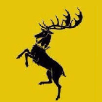

Game of Thrones features rival houses, or factions, across the land of Westeros. Each has a long history dating back generations, but in the world of George R. R. Martin, death can come quickly and entire houses can be wiped away from history. There are currently 8 great houses, 2 former great houses, and 11 that have become extinct. Major relevant houses are listed below.

|
House Stark. Rulers of the North from the castle of Winterfell and the royal house of the independent Kingdom of the North. Retook their lands from House Bolton, who usurped House Stark at the Red Wedding, after the Battle of the Bastards. The house is ruled by Sansa Stark, the Queen in the North. The heir is Princess Arya Stark. |

|
Rulers of the Westerlands from the castle of Casterly Rock. The former royal house of the Seven Kingdoms after the destruction of the Great Sept of Baelor until the Battle of King's Landing. Its leadership was disputed by Queen Cersei I Lannister and Hand of the Queen to Daenerys Targaryen, Lord Tyrion Lannister, who became the head of House Lannister after the Battle of King's Landing. |
|  | Rulers of the Stormlands from the castle of Storm's End. The former royal house of the Seven Kingdoms after Robert's Rebellion. The bloodline went extinct after Stannis Baratheon was killed at the Battle of Winterfell. Legally went extinct when King Tommen Baratheon killed himself in King's Landing after the destruction of the Great Sept of Baelor. Restored when Queen Daenerys Targaryen legitimized Robert's unacknowledged bastard son Gendry Baratheon. |

|
The former royal house of the Seven Kingdoms since the War of Conquest. Overthrown in Robert's Rebellion, but restored following the Battle of King's Landing. After Jon Snow rejoined the Night's Watch, House Targaryen became legally extinct. The bloodline of House Targaryen lives in House Baratheon and House Martell. |
| Rulers of the Riverlands from their seat at Riverrun. Riverrun was under Frey and Lannister control until Daenerys Targaryen overthrew Queen Cersei Lannister in the Battle of King's Landing. Lord Edmure Tully was restored to his former positions sometime after Arya Stark assassinated all the males of House Frey. | |

|
Rulers of the Iron Islands from the castle of Pyke. Its leadership was disputed by King Euron Greyjoy and claimant Queen Yara Greyjoy. However, following the Battle of King's Landing, and with Euron's death at the hands of Ser Jaime Lannister, Yara is now the head of the house. |

|
Rulers of the Reach from the castle of Highgarden after the extinction of House Gardener. The bloodline is wiped out as a result of the destruction of the Great Sept of Baelor and the Sack of Highgarden." |

|
Rulers of Dorne from the castle of Sunspear. Deposed by Ellaria Sand and three of the Sand Snakes in their coup. An unnamed Martell retook control over Dorne after Ellaria's defeat. |

|
Rulers of the Vale of Arryn from the castle of the Eyrie. It was integrated with the Kingdom of the North until King Jon Snow abdicated. Its current head is Lord Robin Arryn, who is also the only current member. |
Game of Thrones is an expansive universe. Throughout the TV series, 817 characters have speaking parts, who are listed below. To understand which characters are the most important, or which character pairs share screentime demonstrating the strongest relationships, browse 'Beyond the Wall' above.